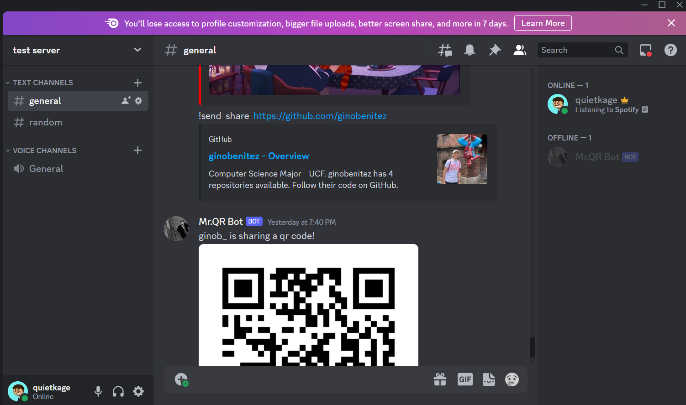
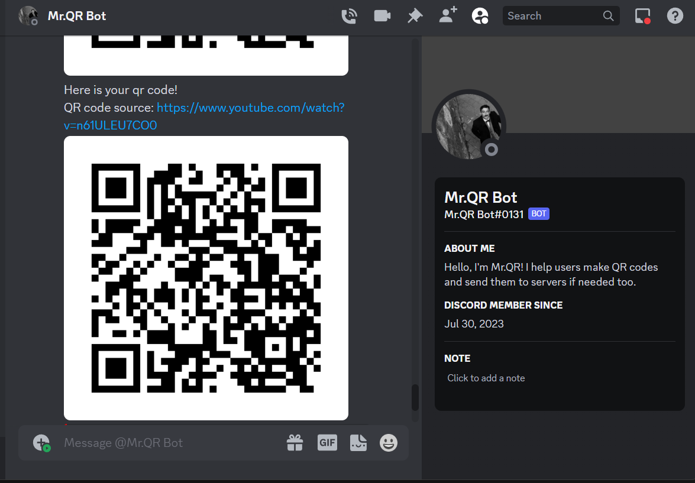
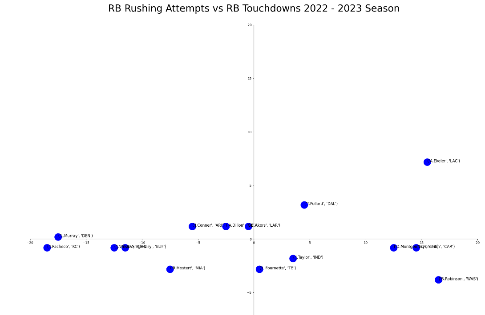

Technologies: Java
As a semester project, I was able to create a generic skip list data structure that worked well with integers, strings, and floating point values. The main goal of the project was to learn how to use different Java interfaces and libraries to implement something unique. The skip list included O(logn) operations such as: add, search, and delete; As well as O(n) operations such as: rebalance and hashCode. It required strong expierence with inheritance, incapuslation, and object-oriented programming.
Technologies: Python, Discord.py, qrcode.py
As a fun personal project, I learned how to create a discord bot using python and python libraries such as: discord and qrcode. The purpose of the discord bot was for users to be able to create qr codes to share in servers or send to themselves. The idea of networking and the fact Discord is used by many as a way to connect inspired me to create this program. The active challenge of this project is hosting the discord bot 24/7 and finding ways for it to be more efficient.
Here are some pictures of the Discord bot in action:
 Technologies: HTML, CSS, JavaScript, Firebase
For ShellHacks 2023, my group and I came up with Po-Go!. Po-Go! is a simple idea of users being able to find local events in there area with ease. This could be a free concert, fresh market, pop up shops, and many more. We challenged ourselves to make a site for our idea. Even though we ran through some obstacles we learned something new. I was able to implement a Firebase database so that user info can be saved when creating an account.
Technologies: Python, Jupyter, pandas.py, matplotlib.py
As a current fan of the NFL, I wanted to be able to test myself and be able to learn how to use data the the National Football League. The goal of this project was to be able to successfully intergrate NFL Next Gen Stats from an NFL python library and be able to visual showcase that data using chart of some sort. With the help of the pandas and matplotlib libraries, I was able to create the chart below. I still consider this project a work in progress as I aim to implement machine laerning so it can make predictions on certain stats of every player or team.
I am currently looking forward to attending the KnightHacks 2023 hackathon this October 2023. I am excited to see what idea my group and I come up with and how to we're going to make it stand out!